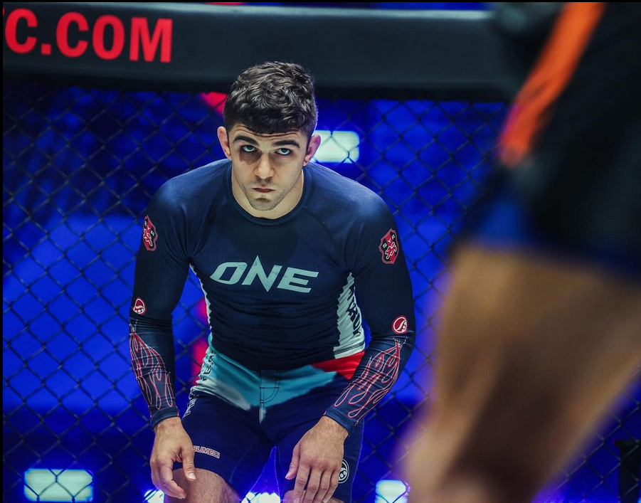

Qu'est-ce que le GRAPPLING?
Le grappling est un art de combat axé sur les techniques de lutte, les projections et les soumissions.
Il regroupe plusieurs disciplines comme le jiu-jitsu brésilien (BJJ), le sambo, la lutte olympique, et le catch wrestling.
Contrairement à d'autres sports de combat, le grappling exclut les frappes et se concentre sur le contrôle, la stratégie et les techniques pour forcer un adversaire à abandonner.
Combattants légendaires
Gordon Ryan

Gordon Ryan, surnommé "The King", est l'un des plus grands compétiteurs de grappling de tous les temps.
Multiple champion ADCC et ceinture noire de jiu-jitsu brésilien, il est reconnu pour son expertise technique et son intelligence tactique.
Il a redéfini le sport grâce à son jeu de soumission dominant.
Marcelo Garcia

Marcelo Garcia est une légende vivante du grappling et du jiu-jitsu brésilien.
Il est célèbre pour son style dynamique, ses guillotines implacables et sa technique exceptionnelle en butterfly guard.
Considéré comme un modèle d'humilité, il inspire des générations de grapplers à travers le monde.
Mikey Musumeci

Mikey Musumeci est l'une des plus grandes stars contemporaines du Jiu-Jitsu brésilien.
Premier Américain à remporter plusieurs titres mondiaux IBJJF en Gi et No-Gi, il est connu pour ses techniques innovantes et son jeu ultra-stratégique.
Surnommé "Darth Rigatoni", il représente également le grappling sur la scène internationale grâce à ses performances dans ONE Championship.